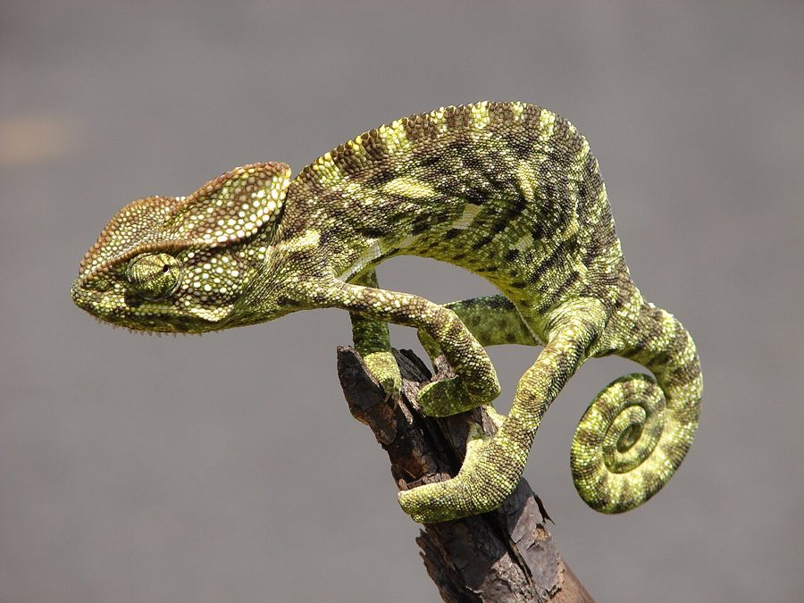

असली गिरगिटIndian Chameleon
Chamaeleo zeylanicus · Chamaeleonidae · REP-0003

- Scientific name
- Chamaeleo zeylanicus Laurenti, 1768
- Family
- Chamaeleonidae
- Hindi
- असली गिरगिट / गिलोट
- Status here
- native
- IUCN
- LC
When to look कब देखें
Expected mainly in March, April, May, June, July, August, September, October.
असली गिरगिट / Indian Chameleon
Chamaeleo zeylanicus Laurenti, 1768 — Chamaeleonidae
असली गिरगिट और गिरगिट (बाग की छिपकली, Calotes versicolor, REP-0001) — दोनों का एक ही हिन्दी नाम है, पर दोनों बिलकुल अलग हैं। असली गिरगिट अपनी आँखें दो अलग-अलग दिशाओं में घुमा सकता है, अपनी जीभ शरीर की लम्बाई से डेढ़ गुना बाहर 1/16 सेकंड में फेंक सकता है, और रंग बदलता है — सिर्फ छुपने के लिए नहीं, बल्कि संवाद के लिए भी।
Quick Identification त्वरित पहचान
| Feature | Description |
|---|---|
| Size | 20–30 cm including prehensile tail |
| Body | Laterally compressed (leaf-shaped profile); high casque (helmet-like head ridge) |
| Eyes | Each eye moves independently — turret-like; can look two directions simultaneously |
| Feet | Zygodactyl — toes fused into opposing groups (3+2 and 2+3) for gripping |
| Tail | Prehensile — used as a fifth limb; tightly coiled when resting |
| Movement | Slow, deliberate, swaying gait; clings to branches |
Confusion with Calotes versicolor: Garden Lizard (REP-0001) is also called "गिरगिट" locally. Chameleon is immediately distinguished by: compressed body profile, turret eyes, prehensile tail, and zygodactyl feet. Garden lizard has flat body, normal eyes, pointed tail, and normal feet.
Morphology आकारिकी
| Feature | Measurement |
|---|---|
| Total length | 20–30 cm |
| Body (snout to vent) | ~10–14 cm |
| Tongue reach | Up to 1.5× body length; strike speed 6 m/s |
| Weight | 30–70 g |
Body: Strongly laterally compressed — when viewed from the front, the body is extremely thin, almost like a leaf standing on edge. This makes the chameleon nearly invisible in foliage when viewed face-on.
Head: High casque (crest on top of head), more pronounced in males. Gular (throat) crest of conical scales in males. Each eye is mounted in a turret of fused lids with a small central pupil; each eye rotates independently through ~180°. When one eye focuses on prey, the other scans for predators.
Feet: Zygodactyl — on the front foot, toes 1-2-3 are fused into one bundle and 4-5 into another; on the hind foot, reversed. This creates a powerful, pincer-like grip for tree branches.
Tongue: The ballistic tongue reaches 1.5× body length when extended at full speed (6 m/s). The tip is a mucus-covered suction cup — insects adhere to it. The entire mechanism is powered by elastic energy stored in the tongue muscles. Retraction takes ~0.07 seconds.
Colour: Base colour greenish-grey to olive-brown; irregular patterns of lighter and darker areas. Males display brighter colours (green, yellow, orange) during territorial interactions and courtship.
Ecological Role पारिस्थितिक भूमिका
Insect predator: Chameleons are specialist insectivores. In eastern UP scrub and garden habitats, they consume grasshoppers, beetles, flies, caterpillars, and other slow-moving insects. Prey is located by visual tracking — both eyes focus together for stereoscopic vision just before the strike.
Colour change — correcting the myth: The popular belief is that chameleons change colour to match their background. This is only partially true and is not the primary driver. Colour change in chameleons is controlled primarily by:
- Social communication — aggressive (dark, patterned), submissive (pale, uniform), courtship (vivid colours)
- Thermoregulation — dark colour when cold (absorbs more heat), pale when warm
- Background matching is secondary and limited in precision
The mechanism: specialised cells called iridophores contain guanine nanocrystals that change spacing when the chameleon's mood changes — altering which wavelengths are reflected (structural colour, not pigment).
Prey for predators: Despite their camouflage, chameleons are preyed on by rat snakes (REP-0002), raptors (black kite, BRD-0011), and mongoose (MAM-0002).
Life Cycle / Phenology जीवन चक्र
| Month | Event |
|---|---|
| Mar–May | Breeding; males display bright colours, fight for territory |
| May–Jul | Female digs soil burrow 10–15 cm deep; lays 10–30 eggs underground |
| Aug–Sep | Eggs hatch (2–3 month incubation) |
| Oct–Feb | Juveniles grow; adults slow down in winter |
| Dec–Jan | Partial winter torpor; less active |
Oviparous: Female descends from tree, digs burrow in soft soil, lays eggs, covers them, and returns to tree — she does not guard the nest.
Agricultural / Human Relevance कृषि एवं मानव उपयोग
Confusion with garden lizard: The most significant human–chameleon interaction is misidentification. Both species are called "गिरगिट" — the chameleon's harmlessness is sometimes questioned based on irrational fear.
Legal protection: Schedule II, Wildlife Protection Act 1972. Cannot be captured or killed. Sometimes captured for pet trade or local curiosity — illegal.
Insect control: A garden with chameleons benefits from reduced insect pest pressure, particularly caterpillars and beetles in hedgerow plants.
Expected Locally स्थानीय रूप से अपेक्षित
Not a field record. Written from published accounts for eastern Uttar Pradesh. No confirmed local sighting yet — if you have seen it, that is what the atlas needs.
अभी तक स्थानीय पुष्टि नहीं। यह विवरण प्रकाशित स्रोतों से है, किसी अवलोकन से नहीं।
The Indian Chameleon is uncommon compared to the Garden Lizard but present in scrub hedgerows and garden trees in Basti district. It is most reliably found by scanning the interior of thorny scrub bushes (Acacia, Ziziphus) or hedgerow trees in the morning. Its slow, deliberate movement and cryptic colouration make it very easy to overlook. When encountered, it typically freezes and sways gently like a leaf in the wind — an effective concealment strategy. Reports from local farmers indicate it is less common than 20 years ago, possibly related to scrub clearing for agriculture.
Distribution वितरण
Global range: Endemic to the Indian subcontinent — India, Pakistan, Sri Lanka, and Bangladesh. Chamaeleo zeylanicus is the only Old World chameleon native to the Indian subcontinent.
In India: Distributed across the Indian peninsula and into the Gangetic plain and Sri Lanka. Found at elevations from sea level to approximately 1,000 m. Absent from the northeastern states (where replaced by Calumma and Trioceros through trade routes rather than native range).
In Uttar Pradesh: Present across the state in scrub and hedgerow habitats; generally uncommon and patchily distributed compared to Calotes versicolor.
In Basti district / eastern UP: Present in scrub hedgerows and garden trees; not commonly recorded due to cryptic behaviour. Most reliably found in thorny scrub along field margins.
Research Questions शोध प्रश्न
- What is the distribution of Chamaeleo zeylanicus in Basti district — is it present throughout, or restricted to specific scrub/hedgerow habitats?
- Are chameleons declining in eastern UP due to scrub clearing, pesticide reduction of insect prey, or collection for the pet trade?
- Does the chameleon's colour-change repertoire in eastern UP show population-specific signals — or are patterns consistent across India?
- How do tongue-strike accuracy and speed change with temperature in winter versus summer?
- What is the prey spectrum of chameleons in agricultural hedgerows — can this be quantified by observation or stomach content analysis?
Similar Species मिलती-जुलती प्रजातियाँ
| Species | How to distinguish |
|---|---|
| Calotes versicolor (Garden Lizard, REP-0001) | Flat body, normal eyes, pointed tail, normal feet — also called "गिरगिट" locally |
| Chamaeleo chamaeleon (Common Chameleon) | European species — not found in India |
| Rhampholeon spp. (Dwarf Chameleons) | Africa only — not in India |
Taxonomy & Classification वर्गीकरण
Original description. Chamaeleo zeylanicus was described by Johann Nikolaus Laurenti in 1768 in Specimen medicum, exhibens synopsin reptilium emendatam, page 44. The species name zeylanicus refers to Ceylon (Sri Lanka), from where the original type specimen was thought to have come. The genus Chamaeleo Laurenti, 1768 is the type genus of the family Chamaeleonidae.
Subspecies. No subspecies are formally recognised; Chamaeleo zeylanicus is treated as monotypic.
Family and order placement. Belongs to the order Squamata, family Chamaeleonidae (chameleons). The family Chamaeleonidae contains approximately 200 species of chameleons, found in Africa, Madagascar, the Middle East, and the Indian subcontinent. The genus Chamaeleo contains approximately 15 species in the Old World. Chamaeleo zeylanicus is the sole Indian representative of the family.
Phylogenetic notes. Molecular phylogenetics confirms that Chamaeleonidae is a monophyletic family within the Acrodonta — lizards with acrodont dentition (teeth fused to the jawbone margin). The acrodont clade includes agamids (Calotes) and chameleons. Despite superficially similar features (laterally compressed body, colour change in agamids), chameleons and agamids are not closely related — the shared characteristics are convergences. The ballistic tongue system of chameleons is unique and has no close homologue in any other lizard group.
IUCN status rationale. Assessed as Least Concern (LC) by the IUCN Red List. However, scrub and hedgerow habitat loss, insecticide reduction of prey, and illegal pet trade pose local threats. Not globally threatened but declining regionally in intensively farmed areas.
Photo Gallery फ़ोटो गैलरी
Atlas Connections संबंधित प्रजातियाँ
- REP-0001 Oriental Garden Lizard — shares "गिरगिट" name; shares scrub habitat but completely different family
- REP-0002 Indian Rat Snake — predator of chameleons in scrub habitat
- BRD-0011 Black Kite — aerial predator; chameleon camouflage partially effective
- INS-0005 Paddy Grasshopper — prey species; field margin encounter
References सन्दर्भ
- Laurenti, J.N. (1768). Specimen medicum, exhibens synopsin reptilium emendatam. Vienna.
- Smith, M.A. (1935). Fauna of British India — Reptilia and Amphibia, Vol. II, pp. 202–204.
- Duvall, D. et al. (1983). Communication in chameleons. American Zoologist, 23: 213–226.
- Teyssier, J. et al. (2015). Photonic crystals cause active colour change in chameleons. Nature Communications, 6: 6368.
- Zoological Survey of India. Fauna of Uttar Pradesh — Reptilia. ZSI, Kolkata.
- GBIF Occurrence Data — Chamaeleo zeylanicus, India (2026). GBIF taxon key: 2449028.
Source file: species/fauna/reptiles/indian_chameleon.md